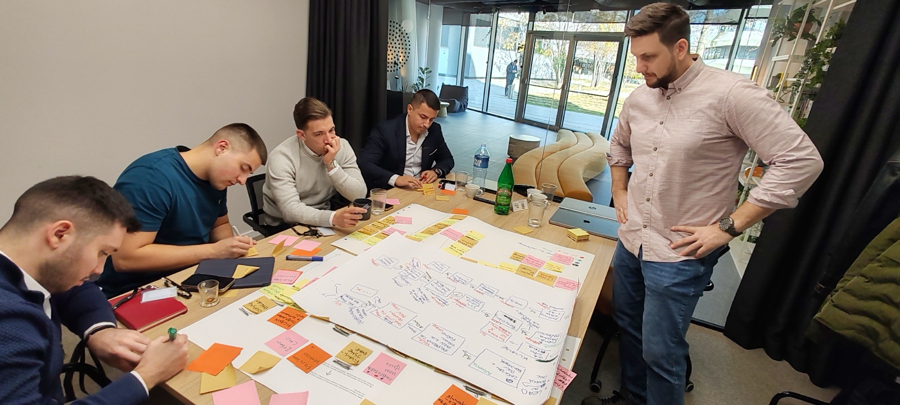

Broj ljudi nije faza tvog biznisa.
Firma od 15 ljudi može i dalje da živi od talasa klijenata. Solo vlasnik može da bude spremniji za rast od agencije. Upitnik ti kaže gde si stvarno, šta te tačno drži i šta da radiš narednih 30 dana.
Besplatno. PDF plan stiže odmah na tvoj mejl.

Radiš sve, a ne mičeš se.
U većini ovih situacija problem nije u tome koliko radiš. Problem je što radiš stvari iz pogrešne faze: ono što je trebalo ranije, ili ono što dolazi tek kasnije.
Svaka faza ima jednu ključnu kočnicu
Upitnik te smešta u jednu od njih. Najviše vlasnika sa kojima radim je u fazama od Ritma do Dubine.
Posle 5 minuta znaš šta je sledeći korak
- Fazu rasta tvog biznisa i njenu ključnu kočnicu
- Šta te tačno drži u toj fazi
- Tri koraka za narednih 30 dana i šta za sada ne radiš
- PDF plan na mejl
- Jedan do tri videa koje vredi pogledati baš za tvoju fazu, redom kojim se gledaju

Upitnik je za tebe ako
- vodiš agenciju ili digitalni uslužni biznis, sa timom ili sam
- imaš osećaj da radiš sve, a firma se ne pomera
- ne znaš da li ti treba novi čovek, novi alat ili nešto treće
- hoćeš da znaš šta je prvo, a ne listu od dvadeset saveta
Nije za tebe ako
- još nemaš ponudu ni prve klijente: tada ti treba prvo prodaja, ne sistem
- tražiš gotov recept koji važi za svaki biznis
Kratka pitanja
Koliko traje?
Oko 5 minuta. Pitanja su situacije iz posla, biraš onu koja najviše liči na tvoju nedelju.
Da li važi i ako radim sam?
Da. Upitnik ima posebna pitanja za one koji rade sami, za mali tim i za tim od pet i više ljudi.
Šta se dešava posle?
Plan stiže na mejl odmah. Posle par dana stiže i drugi video za tvoju fazu. Ako budeš hteo, možeš da zakažeš poziv da proverimo da li ima smisla da radimo zajedno.